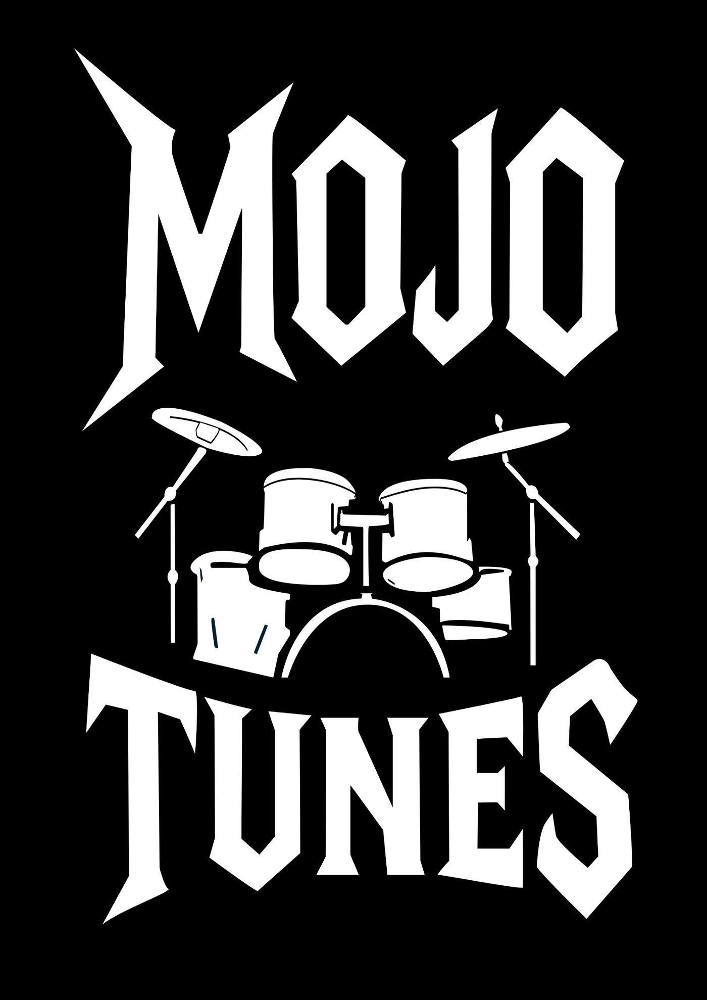
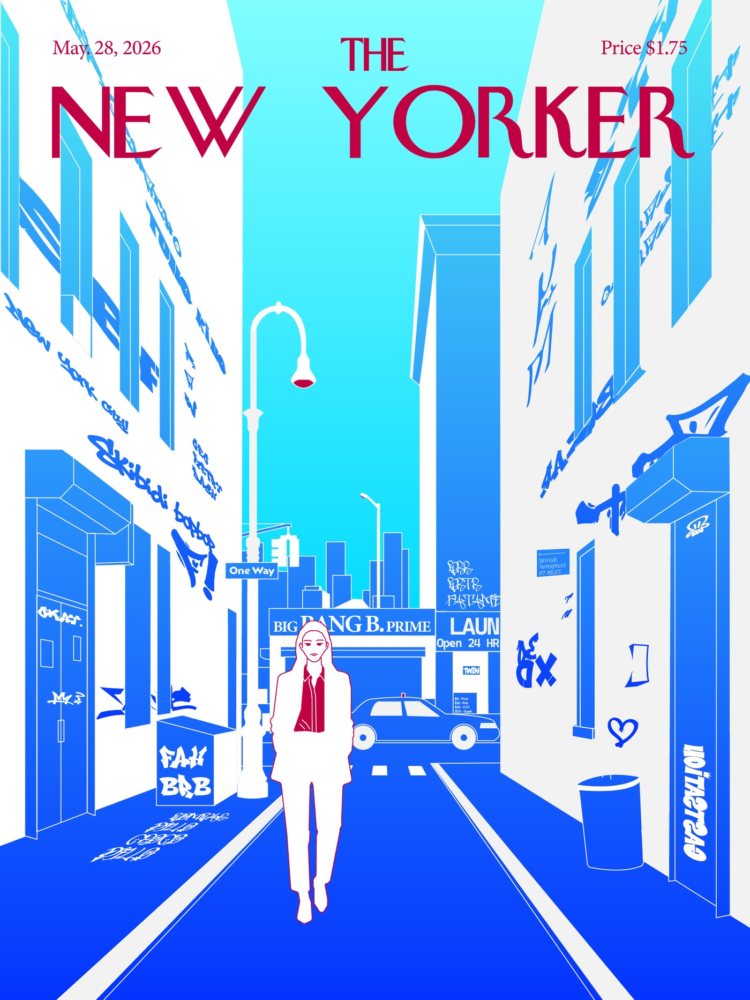
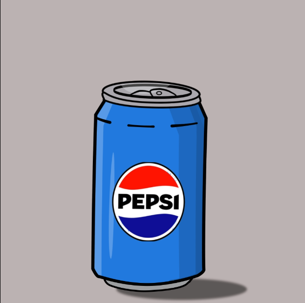
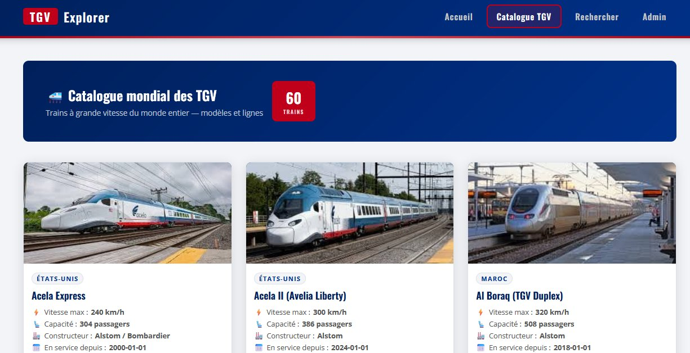

Mes Projets

Design graphiqueAtelier · BUT MMI
Charte Graphique Mojo Tunes
Refonte de l'identité d'un magasin de musique à Troyes : changement de nom, création de logo et charte graphique complète avec mockups.

Design graphiqueAtelier · BUT MMI
Couverture The New Yorker
Réinterprétation d'une couverture du New Yorker : illustration vectorielle d'une rue new-yorkaise entre esthétique éditoriale classique et culture urbaine.

Motion DesignProjet personnel
Animation Pepsi
Animation publicitaire fictive réalisée sur After Effects, autour de l'identité visuelle de la marque Pepsi.
 Développement web
Développement web
SAÉ 105 · BUT MMI
La Gimsothèque
Site web dédié à Maître Gims : discographie complète en JSON, galerie interactive, players Spotify embarqués et formulaire de contact.

Développement webSAÉ · BUT MMI
TGV Explorer
Catalogue mondial de 60 TGV avec base de données MySQL conçue de A à Z, espace admin sécurisé, recherche filtrée et déploiement HTTPS.
 Design graphique
Design graphique
SAÉ · BUT MMI
Tarot Clair Obscur
Création de 5 cartes de tarot dans l'univers d'Expédition 33 esthétique encre noire, personnages fantastiques et verso symétrique.
 Communication & Vidéo
Communication & Vidéo
SAÉ · BUT MMI (Agence JMLR)
Claude Monet — Stratégie Digitale
Conception d'un écosystème numérique contemporain et réalisation d'une vidéo storytelling immersive simulant la présence en ligne moderne du maître impressionniste.
 Audiovisuel
Audiovisuel
SAÉ Finale · BUT MMI
Insomnia — Escape Game Nocturne
Promotion complète d'un escape game nocturne fictif : vidéo finale, animatique, site agence, site événementiel et stratégie marketing. Responsable de toute la partie audiovisuelle.
 Design graphique
Design graphique
SAÉ · BUT MMI
Donjon Isométrique
Création d'un donjon à 4 niveaux en perspective isométrique architecture modulaire, ambiances distinctes et vue d'ensemble cohérente.